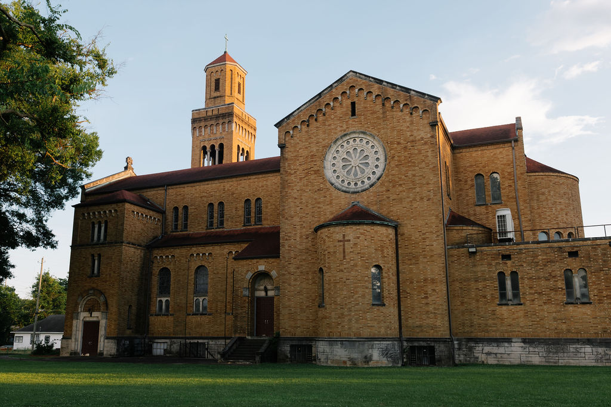

Weekly Bulletin
Parish News & Liturgical Updates
Access weekly bulletins for announcements, Mass intentions, devotional notes, and parish-wide prayer intentions.

Current Bulletin & Reflection
Open this week's bulletin PDF directly in your browser.
Open Current Bulletin (PDF)Past Bulletins
Highlights This Week
- Second collection for the Catholic Home Missions Appeal.
- May Crowning after the 9:00 a.m. and 10:45 a.m. Masses.
- Mass intentions currently limited to one Mass per family per week.